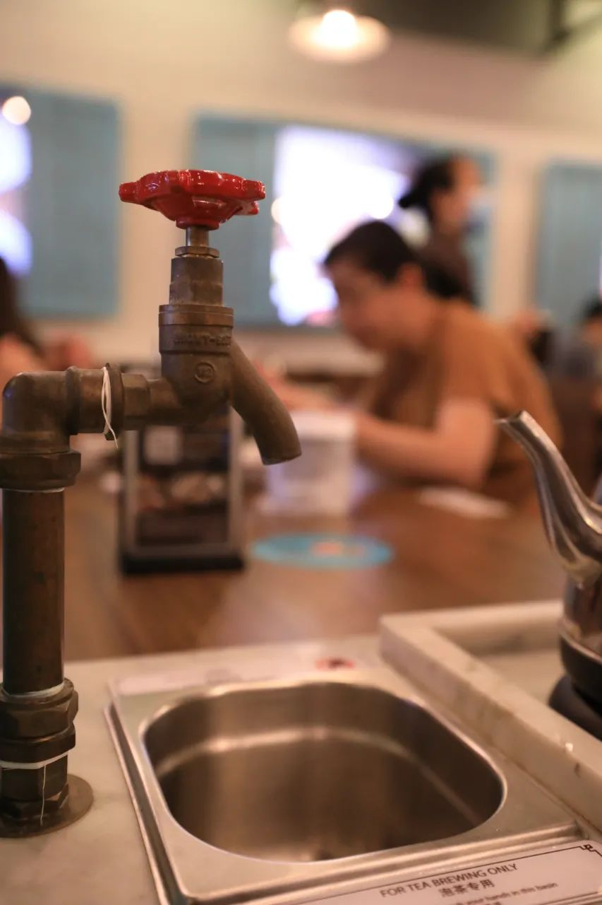

本文是张衔瑜第161篇推文
共计1817个字，83张图
“你是醒了？”
听到对面翻身的声音，我小声问了一下。
“嗯，是醒了。”
“去吃早饭？”
“好。”
稍微洗漱了一下，走下楼去。我把手电筒亮起来，从围墙的缝隙中钻出去。风吹着甚至有点冷。坐上车，室友问我：“现在到底几点啊？”我亮了下手机“五点四十二。”
倒也没有表现出太多惊奇，可能是刚醒的梦又有点上头，或者已经对我的迷醉操作见怪不怪了。“那我们，这是去哪里吃早饭？”我在手机上输入了一个地点“汉口吧。前进四路自治街上边，在十九中旁边，离循礼门蛮近的。”
哪怕是想自己以前做过的事也觉得不真实。早上天还没亮的时候，为了一份豆皮和一叠烧麦，没有公交和地铁，就从光谷开车二十三公里去汉口吃早饭。路上只有清扫车和夜班的士，过长江从武昌到汉阳，又过汉江从汉阳到汉口。所有的地名和灯火一起，被甩到车后。
对你科蜗壳它磕叉鸽的印象并不会因为时间，而在记忆上加美化或者丑化。会淡忘一些事情，会忘记到底在哪一堂课上学了些什么、忘记哪里补的实验或者小卖部的价格，只有关于生活和那些奇怪的小冒险会一直怀念。
不用对比就会感慨，原来那时候的生活状态是这样啊。一看就不是什么正常人。
现在。太阳照进来了诶，看着窗外一片海洋蓝色和一会就要熄灭的路灯。吃两片面包，该学习了。
朋友在微信里问“饭？”看了看表，确实到中午了。
看到太阳开始直接照到我的手上，就把窗帘拉低一些。往窗外一瞟，到日落时间了呀。拿出相机做一会儿法术


原以为可以像以前一样，周内出去玩、周末学习。事实上，每周只在周末出去一小会儿，一小会儿的意思是不超过五个小时，剩下的时间还是继续赶着有些有用、有些没什么用的内容。
在一个雨天，和蜗壳的网友去Jurong East聚餐。


我想拍出来这里的四条轨道，并线两路地铁/轻轨的这种操作。但是好像如果我不说的话就看不出来


测评了一次松发肉骨茶。据说东南亚的肉骨茶也分了两个版本，马来西亚重药材味，而新加坡重白胡椒味。




小群名是全球面基首发。之前有一个20届留学互助群，前段时间有人在问要不要建21届群的时候，其他人揶揄直接把群名改了不久得了毕竟参与人群还是这些。又哭又笑，像Joker
虽然读着读着，多的是各种迷醉的事情。但是我也没有世界线，也不知道谁在收束
来杯决明子吃茶三千


傍晚一边讲PPT，一边瞟到窗外天色暗下去。以为阴天绝不会出现的落霞红突然出现。嘴上在继续撕些没什么增益的东西，心里开起了读剧本的小会。黄昏、视力、手套啤酒还有柠檬味的口香糖。
以往生活疲劳又没有盼头的时候，就会买那一周的默剧话剧音乐剧舞台剧。约上剧搭子、或者就自己去。穿一身好看的衣服，在便利店解决晚餐，寄存所有的物品之后，走到剧场里然后把衣服反过来穿好坐下。
最后一次看话剧还是今年一月十二号，从南京到武汉，和好朋友去琴台看黎星。那天天冷，反穿的衣服就像沙发一样舒服。朋友也学我这样。不知道ta喷的是什么香水，上半场看了一小会儿就坐在我旁边睡熟了。
散场之后，我说我在南京玩得没钱了，不如你请我吃夜宵吧。朋友说，好。于是坐夜班公交从汉阳到武昌，一手测评汉派烧烤、一手猛灌金银花露。
那样的生活。算算也离开八个月了
出门扫街的动力，完全来自于和朋友出门约吃饭或者别的什么活动。


去探了一下这家店Nakhon Udon Thai Kitchen，神奇的泰餐店


其实去这家还有一个目的，是旁边7-11的好喝青苹果冰沙

LForeverYly在PGP一个人住着婚房的双人间，没有一个到过的人不羡慕ta的生活状态。财务自由、未婚、无孩，朋友虽然还没有财务自由，但也已经有了人们希望通过财务自由达到的那种生活方式


上个月在国内买的凉席，终于运到了~
当我在朋友圈里援引一位预备党员来过后的评价：革命面貌焕然一新。
后来发现留学生群体中的党员比例比我想象的要高多了。以前不说的话，一般不会展示自己的其他身份。但是说过之后，的确比我以前接触朋友里的比例要高一些。
山上的花在山上开着
天若下雨它们也就跟着流泪了
山里蜜蜂在山里生长着
天若放晴它们也就飞到花那去了
——《你把我的脸庞转向明天》法兹乐队
一些食堂里的饭
石锅拌饭

蔬菜鸡肉汤套餐

牛丼茶碗蒸
名字倒是很好听，卖相也不错。当然这是如果不看价格，也不吃的时候，就会觉得还好。甚至蛮吸引人的
一天看日落。
朋友一和我说，学校可能是给你分配了一个机位。


这么一想的话，我交的寝室费只是名字叫寝室费。实际上我是租了一个机位，然后顺便在这里洗漱睡觉学习。这么一想的话，寝室费也变得亲切了很多。


听我的。试试便利店的这个三明治吧科研艰难的人
微波炉叮二十秒，已经无数次救命靠这个